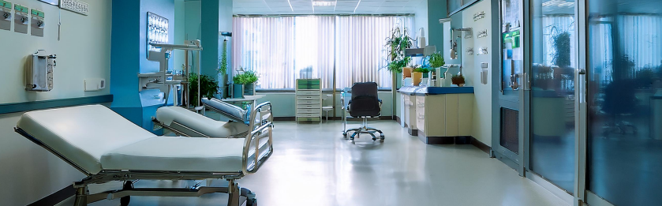

当院について
佐藤医院は、地域の皆様の健康を守り、より良い生活をサポートすることを使命としています。創立以来、私たちは「患者様一人ひとりに寄り添った診療」を大切にし、地域密着型の医療を提供してまいりました。今後も、皆様の健康維持と病気予防に貢献するため、より良い医療サービスを提供し続けることをお約束いたします。
診療方針と医療の質
当院では、内科を中心にさまざまな疾患に対応しています。患者様の症状を的確に診断し、最適な治療を提供することを心がけています。また、診療にあたっては、患者様との信頼関係を大切にし、わかりやすく丁寧な説明を行い、納得していただける治療方針を一緒に考えていきます。
患者様中心の医療を提供
私たちの診療方針は、「患者様の声に耳を傾け、共に歩む医療」です。病気の治療だけでなく、生活習慣の改善や予防についてもアドバイスを行い、患者様の健康管理を全力でサポートします。治療方法や薬について不安なことがあれば、遠慮せずにお尋ねください。患者様の理解を深め、納得した上で治療を進めることを大切にしています。
地域に根ざした医療
佐藤医院は、地域の皆様の健康を守るために、長年にわたり地域医療を支えてきました。地域密着型の医療を提供し、信頼される存在であり続けることを目指しています。定期的な健康診断や健康相談も実施しており、地域住民の皆様が健康な生活を送れるよう、サポートを行っています。
また、病気の治療だけでなく、予防の重要性を強く認識しています。定期的な健診を通じて、早期発見と早期治療を実現し、患者様がより健康な生活を送れるよう努めています。
ご家族全員をサポート
当院では、すべての年代の患者様に対応しており、子供から高齢者まで、各世代に必要な医療サービスを提供しています。特に、ご家族全員の健康をサポートするために、予防医療や健康相談を通じて、より良い生活習慣の定着を目指しています。
- 小児科的対応: 子どもの成長や発育に関するアドバイスや、予防接種を行っています。
- 高齢者医療: 高齢者の健康管理や介護予防、生活習慣病の管理をしっかりサポートします。
最新の医療設備と技術
当院では、診断精度を高めるために、最新の医療設備を導入し、診療に活かしています。また、必要に応じて適切な検査を行い、迅速に対応することを心がけています。さらに、医療の進歩に伴い、常に最新の治療法や医療技術を学び、提供できるようスタッフ全員が研鑽を積んでいます。
患者様とともに歩む未来
佐藤医院では、患者様の健康を第一に考え、今後も安心・安全な医療を提供し続けます。どんな小さな悩みでも、お気軽にご相談ください。私たちがしっかりとサポートさせていただきます。地域の皆様とともに、より健康で豊かな生活を築いていきたいと考えています。
佐藤医院のスタッフ一同、皆様のご来院を心よりお待ちしております。
医師の理念・方針
佐藤医院は、地域医療の一翼を担う医療機関として、「患者様第一」の精神を大切にしています。私たちの理念は、単に病気を治療することにとどまらず、患者様が心身ともに健やかな生活を送るために、あらゆる面からサポートすることです。診療を通じて、皆様が健康で充実した日々を送るお手伝いをすることを使命と考えています。

1. 患者様との信頼関係を築く医療
私たちの医療の基本は「信頼」です。患者様一人ひとりと向き合い、心から信頼される医師であり続けることを目指しています。患者様には、症状の詳細や治療方針についてしっかりと説明し、納得いただけるように心掛けています。また、患者様の不安や疑問に寄り添い、共に解決策を見つけていくことが、信頼関係を築く基盤となります。
私たちは、患者様の生活の質を向上させるために、どんな小さなことでもお話しいただけるような環境作りを心掛けています。診療の際には、治療だけでなく、予防や健康管理についてもアドバイスし、患者様と共に健康維持に取り組んでいきます。
2. 予防医療を重視し、健康維持をサポート
当院では、病気の治療だけでなく、予防医療にも力を入れています。定期的な健康診断を実施し、早期発見・早期治療を目指すとともに、生活習慣病や感染症の予防にも積極的に取り組んでいます。予防接種や健康相談を通じて、病気を未然に防ぎ、患者様が健康を維持できるようサポートいたします。
さらに、生活習慣の改善や食事、運動のアドバイスを通じて、患者様が自分の健康に対して主体的に向き合う手助けをします。予防を重視することで、病気のリスクを減らし、より長く健康な生活を送っていただけるよう努めています。。
3. 最先端の医療技術と設備を導入
私たちは、常に最新の医療技術と設備を取り入れ、診療の質を向上させることを大切にしています。高度な医療機器を使いこなし、より精度の高い診断を行い、患者様に最適な治療法を提案します。新しい治療法や医療技術に関しても積極的に学び、スタッフ全員で最新の知識を身につけていきます。
医療の進歩に伴い、日々の研修や勉強会にも力を入れ、患者様に最高の医療を提供できるよう心掛けています。私たちの診療方針は、常に「より良い医療」を提供することを目指し、施設の充実を図っています。
4. 患者様のライフステージに応じた医療
当院では、すべての患者様に対して、ライフステージに合わせた医療を提供します。子どもから高齢者まで、各年代の健康管理に対応し、それぞれに必要なケアを行っています。例えば、小児科的なサポートでは、予防接種や発育に関するアドバイスを行い、高齢者の方々には生活習慣病の予防や管理をサポートしています。
患者様が健康を保ち、快適な生活を送れるように、個々の状況に合わせたアプローチを大切にしています。家族全員で健康を守るために、各年代のニーズに応じた医療サービスを提供しています。
5. 地域密着型の医療
佐藤医院は、地域に密着した医療機関として、地域住民の健康を守るために努めています。地域の皆様が気軽に相談できる場所として、信頼される存在であり続けることを目指しています。また、定期的に健康セミナーや講演会を開催し、地域の健康意識向上にも貢献しています。
地域社会の一員として、患者様との信頼関係を大切にし、地域の健康づくりに貢献する医療を提供していきます。
6. 患者様のプライバシーと安全の確保
患者様のプライバシーを最優先に考え、個人情報の管理には十分に配慮しています。また、診療においては安全性を最優先に考え、最新の感染症対策や衛生管理を徹底しています。患者様が安心して診療を受けられる環境を整え、医療の質の向上とともに、安全で安心な医療提供を行っています。
チーム医療の推進
佐藤医院では、医師、看護師、事務スタッフが一丸となって患者様をサポートしています。チーム医療を実践することで、診療の質を高め、患者様にとって最適なケアを提供することを目指しています。スタッフ全員が患者様に寄り添い、患者様の健康を守るために協力して働いています。
スタッフ紹介
地域の皆様に安心してご来院いただけるよう、私たちスタッフ一同、誠心誠意対応いたします。それぞれの専門性と温かさを活かし、皆様の健康を支えるパートナーとしてお力になれるよう努めてまいります。
院長：佐藤 太郎
患者様にとって気軽に相談できる「かかりつけ医」を目指しています。どんな小さな不安でも、まずはご相談ください。
経歴：
光明大学医学部卒業後、瑞穂中央総合病院で内科医として10年間勤務。その後、地域医療への貢献を目指し、佐藤内科医院を開院。
専門分野： 生活習慣病、呼吸器疾患、内科全般
看護師長：鈴木 真理
安心して治療を受けていただけるよう、いつも笑顔でお待ちしています。些細なことでもお気軽にご相談ください。
経歴：
白桜大学看護学部卒業後、緑が丘大学病院で10年勤務。地域医療に携わりたい思いから、佐藤内科医院に入職。
得意分野： 親身な対応、注射・採血技術、健康管理指導
臨床検査技師：高橋 由美
検査は不安が伴うこともありますが、できるだけリラックスしていただけるよう、優しく丁寧な対応を心がけています。
経歴：
東都臨床検査技術専門学校を卒業後、武蔵中央医療センターにて15年間の臨床検査技師としての経験を積む。
得意分野： 血液検査、心電図検査、超音波検査
医療事務：山本 花
皆様に気持ちよくご利用いただけるよう、笑顔と真心を大切にしております。初めての方もどうぞ安心してお越しください。
経歴：
希望医療カレッジ卒業後、さくら診療所にて受付業務を担当。現在は佐藤内科医院で患者様対応を担当。
得意分野： 受付業務、カルテ管理、医療費計算